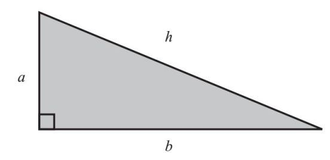
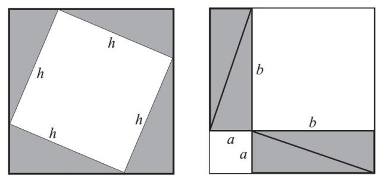
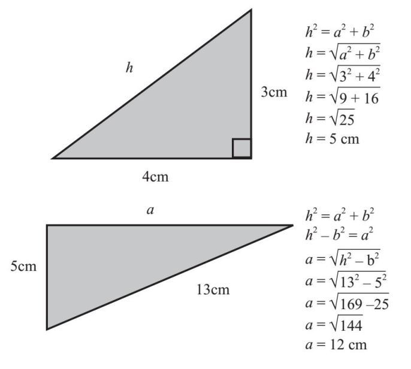
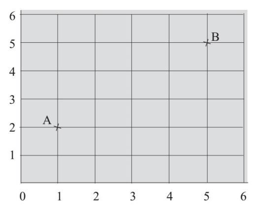
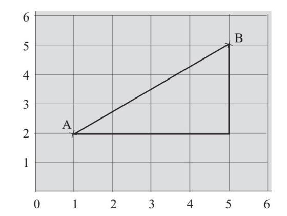
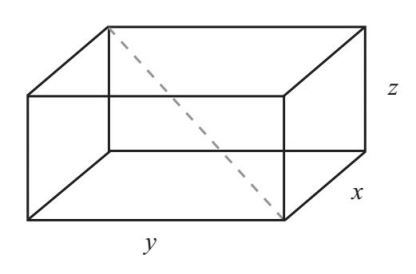
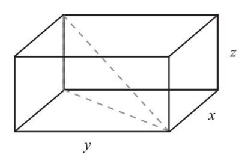
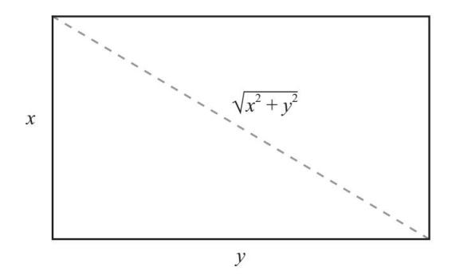
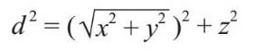

以毕达哥拉斯命名的定理并非由他一个人发明。从世界各地的文化记录来看，在毕达哥拉斯之前，这一定理就已经在用了。然而，毕达哥拉斯是最先证明这一定理的人之一。
毕达哥拉斯定理与直角三角形相关：

我把两条直角边分别标为a 和b ，第三条边为h 。 h 是直角三角形中最长的边，也是直角的对边。毕达哥拉斯的证明过程特别优雅，它只通过重新排列三角形就完成了证明过程。
他把4个这样的三角形排列成两个面积相等的正方形：

左图中间的正方形的面积是h ×h =h 2 ，而右图两个正方形的面积则是a 2 和b 2 。由于左图和右图两个最外面的大正方形面积相同，且4个三角形的大小没有变化，所以我们可以得到：
h 2 =a 2 +b 2
通过毕达哥拉斯定理，我们可以计算直角三角形的未知边长，请看下面的例子：

在这两个例子中，三角形的三个边都是整数。符合毕达哥拉斯定理的整数称为毕达哥拉斯三元组。其他的例子还包括7、24、25和8、15、17。
居住在埃及的希腊数学家丢番图（约210—约290）在其系列著作《算术》中，阐述了与毕达哥拉斯定理相似的方程式。皮埃尔·德·费马（Pierre de Fermat，1607—1665）是一位法国律师，他喜欢在业余时间研究数学，他在《算术》这本书旁边写下了一则注释，说他有一项“了不起的发现”，即证明了方程式x n +y n =z n 只有在n =2时才成立，解就是毕达哥拉斯三元组。一直以来，人们都未能证明它的正确，在大约400年后，英国数学家安德鲁·威尔斯（Andrew Wiles，生于1953年）才最终给出了完整的证明。他的这项证明也为模块化理论的证明铺平了道路，该定理已被《吉尼斯世界纪录大全》列为最不易证明的定理。而究竟费马是如何证明的，则无人知晓。
为什么毕达哥拉斯定理如此重要呢？原来，斜边的计算对于确定坐标几何中两点之间的距离很有帮助。
笛卡儿坐标系可以用来描述位置、线条和形状。想象一下，如果我有两点：A（1, 2）和B（5, 5），如图所示：

我怎样才能确定这些点的准确距离呢？我们可以通过这些点做一个直角三角形：

我可以看到三角形的底边是4，高是3。这与本章开始的三角形相同，所以我们知道AB的距离一定是5。毕达哥拉斯定理也适用于三维实体。假设我有一个宽x 、长y 和高z 的盒子，我想算出它的对角线长度，就可以用毕达哥拉斯定理计算两次并求解。

我先做一个直角三角形：

我要求的是三角形的斜边。我知道三角形的高度是z ，可是不知道底边。但是，如果看一下构成盒子底部的矩形，就可以用毕达哥拉斯定理求出这条边了：

现在我已经知道了三角形的底边和高，可以计算出对角线的长度，我用d 来表示：

这个式子看起来有点儿吓人，但我们可以回忆一下，平方和平方根其实是彼此相反的计算过程，所以它们可以相互抵消，最后求得：
d 2 =x 2 +y 2 +z 2
我们在这里只用了一般条件，就推导出了毕达哥拉斯定理在三维上的公式。许多数学家和科学家都在其工作中用到了三个以上的维度，可以根据需要将毕达哥拉斯定理扩展到尽可能多的维度。量子理论的最新研究表明，我们生活在一个十一维的宇宙中，但我们这里就只考虑三个维度好了！